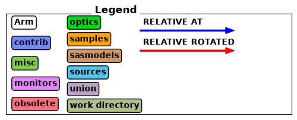
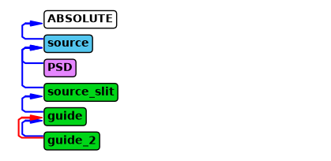

Instrument object#
This section shows the majority of the features implemented for the instrument object in McStasScript.
Initialization#
An instrument object is created with the McStas_instr or McXtrace_instr class. When an instrument object is created the only required argument is the name of the instrument which will be used for the instrument filename. There are however a number of keyword arguments that can be used to provide more information and alter the behavior.
Keyword argument |
Type |
Default |
Description |
|---|---|---|---|
author |
str |
“Python Instrument Generator” |
Name that will appear as author in instrument files |
origin |
str |
“ESS DMSC” |
String that will appear as origin in instrument files |
input_path |
str |
“.” |
Folder which is considered workspace for McStas / McXtrace |
output_path |
str |
instrument_name |
Name of data folder written by simulation |
package_path |
str |
Can be set to manually specify location of McStas/McXtrace installation |
|
executable_path |
str |
Can be set to manually specify location of mcrun/mxrun executable |
|
ncount |
int, float |
1E6 |
Sets the ncount used for simulations |
mpi |
int |
Sets the number of MPI threads used for simulations |
|
force_compile |
bool |
True |
Whether to force compilation before each run or not |
parameters |
ParameterContainer |
Set of parameters for initialized instrument |
import mcstasscript as ms
instrument = ms.McStas_instr("instr_name", author="Mads Bertelsen", origin="DMSC")
instrument_w_settings = ms.McStas_instr("instr_name", ncount=3E6, output_path="new_folder")
Using settings method#
The instrument object has a setting method which can update some settings after initialization. The current settings can always be viewed with show_settings.
Keyword argument |
Type |
Default |
Description |
|---|---|---|---|
output_path |
str |
instrument_name |
Name of data folder written by simulation |
package_path |
str |
Can be set to manually specify location of McStas/McXtrace installation |
|
executable_path |
str |
Can be set to manually specify location of mcrun/mxrun executable |
|
ncount |
int, float |
1E6 |
Sets the ncount used for simulations |
mpi |
int |
Sets the number of MPI threads used for simulations |
|
seed |
Sets the seed of the simulation |
||
force_compile |
bool |
True |
Whether to force compilation before each run or not |
custom_flags |
str |
String with custom flags for mcrun/mxrun command |
instrument.show_settings()
instrument_w_settings.show_settings()
Instrument settings:
output_path: instr_name
run_path: .
package_path: /home/runner/micromamba/envs/mcstasscript-docs/share/mcstas/resources
executable_path: /home/runner/micromamba/envs/mcstasscript-docs/bin
executable: mcrun
force_compile: True
NeXus: False
save_comp_pars: False
Instrument settings:
ncount: 3.00e+06
output_path: new_folder
run_path: .
package_path: /home/runner/micromamba/envs/mcstasscript-docs/share/mcstas/resources
executable_path: /home/runner/micromamba/envs/mcstasscript-docs/bin
executable: mcrun
force_compile: True
NeXus: False
save_comp_pars: False
instrument.settings(mpi=4, seed=300)
instrument.show_settings()
Instrument settings:
mpi: 4
seed: 300
output_path: instr_name
run_path: .
package_path: /home/runner/micromamba/envs/mcstasscript-docs/share/mcstas/resources
executable_path: /home/runner/micromamba/envs/mcstasscript-docs/bin
executable: mcrun
force_compile: True
NeXus: False
save_comp_pars: False
Parameters#
Instrument parameters can be added with add_parameters which returns a parameter object.
wavelength = instrument.add_parameter("wavelength", comment="Wavelength in AA")
print(wavelength)
wavelength.value = 5
print(wavelength)
Parameter named: 'wavelength' without set value.
[dimensionless]
Wavelength in AA
Parameter named: 'wavelength' with value: 5
[dimensionless]
Wavelength in AA
Searching for components and data#
McStas have a few keywords for adjusting where to search for data and components. This is typically added right after the parameters, so its natural to include it here in the documentation of the instrument object.
Dependency#
The DEPENDENCY keyword allows McStas to search for data and software at runtime. There is just one dependency line for an instrument.
instrument.set_dependency("/dependency/example")
As the instrument won’t run unless the dependency is set to a valid path, let’s reset it.
instrument.set_dependency("")
Search#
The SEARCH keyword allows McStas to search for components before McStas code generation. There can be multiple SEARCH statements in an instrument. It is possible to enable SHELL processing so a system command can be given that should return a path. McStasScript has yet to implement this features fully, so McStasScript won’t find components in search paths. For now it can only be used to overwrite existing components with identical input parameters.
instrument.add_search("/search/example")
instrument.add_search("pwd", SHELL=True)
instrument.show_search()
Did not find specified folder: /search/example
Did not find specified folder: pwd
List of SEARCH statements:
SEARCH "/search/example"
SEARCH SHELL "pwd"
It is possible to clear all search statements from an instrument with the clear_search method.
instrument.clear_search()
instrument.show_search()
No Search statements yet
Initialize section#
One of the great advantages for the McStas / McXtrace packages is the initialize section of the instrument where calculations can be performed before the ray-tracing simulation starts. One could for example calculate appropriate angles to reach a certain Bragg peak at a given wavelength. This would involve defining some declare variables, using these in the initialize section and then assigning them as component inputs.
In McStasScript many calculations can be performed directly in Python, and so typically the initialize section is used less, but it is still useful and available through McStasScript.
The instrument object has the method append_initialize which adds a line of code to the initialize. This line is copied directly into the instrument file, so it follows C syntax. Remember the semicolon! In addition there is add_declare_var to specify the declared variables needed. When declare variables are defined an object is returned which can be used when referring to that variable.
wavenumber = instrument.add_declare_var("double", "wavenumber")
instrument.append_initialize("wavenumber = 2*PI/wavelength;")
print(instrument.initialize_section)
// Start of initialize for generated instr_name
wavenumber = 2*PI/wavelength;
Finally section#
The finally section works exactly as the initialize section, but is executed after the ray-tracing simulation. Add a line to it with append_finally.
instrument.append_finally('printf(\"Thanks for using McStasScript!\\n\");')
print(instrument.finally_section)
// Start of finally for generated instr_name
printf("Thanks for using McStasScript!\n");
Help features#
There are a few methods built into the instrument class that helps the user, these are:
available_components
component_help
available_components#
The available_components method shows the component categories, and if called with the name of a category, will show all available components in the specified category. The categories can include the work directory if any components are located there.
instrument.available_components()
Here are the available component categories:
contrib
misc
monitors
obsolete
optics
samples
sasmodels
sources
union
Call available_components(category_name) to display
instrument.available_components("optics")
Here are all components in the optics category.
Absorber Guide_channeled Pol_FieldBox
Arm Guide_gravity Pol_SF_ideal
Beamstop Guide_simple Pol_bender
Bender Guide_tapering Pol_constBfield
Collimator_linear Guide_wavy Pol_guide_mirror
Collimator_radial He3_cell Pol_guide_vmirror
Derotator Mask Pol_mirror
Diaphragm Mirror Pol_tabled_field
DiskChopper Monochromator_curved Refractor
Elliptic_guide_gravity Monochromator_flat Rotator
FZP_simple Monochromator_pol Selector
FermiChopper Place Set_pol
Filter_gen PolAnalyser_ideal Slit
Guide Pol_Bfield V_selector
Guide_anyshape Pol_Bfield_stop Vitess_ChopperFermi
component_help#
The component_help method can show the parameters of any component the instrument object knows about, although not necessarily used in the instrument.
instrument.component_help("Guide")
___ Help Guide _____________________________________________________________________
|optional parameter|required parameter|default value|user specified value|
reflect = 0 [str] // Reflectivity file name. Format <q(Angs-1) R(0-1)>
w1 [m] // Width at the guide entry
h1 [m] // Height at the guide entry
w2 = 0.0 [m] // Width at the guide exit
h2 = 0.0 [m] // Height at the guide exit
l [m] // length of guide
R0 = 0.99 [1] // Low-angle reflectivity
Qc = 0.0219 [AA-1] // Critical scattering vector
alpha = 6.07 [AA] // Slope of reflectivity
m = 2.0 [1] // m-value of material. Zero means completely absorbing. glass/SiO2
Si Ni Ni58 supermirror Be Diamond m= 0.65 0.47 1 1.18 2-6 1.01 1.12
W = 0.003 [AA-1] // Width of supermirror cut-off
-------------------------------------------------------------------------------------
Adding components#
One adds components to the instrument using add_component which takes the name of the component instance for the instrument, followed by the name of the component in the library. When adding a component, a component object is returned, and how these can be manipulated is discussed on the component object page. Notice that it is not allowed to add two components with the same instance name, meaning rerunning this cell would raise an exception.
source = instrument.add_component("source", "Source_div")
source.set_parameters(xwidth=0.1, yheight=0.1, focus_aw=3.0, focus_ah=2.0,
lambda0=wavelength, dlambda="0.1*wavelength")
print(source)
COMPONENT source = Source_div(
xwidth = 0.1, // [m]
yheight = 0.1, // [m]
focus_aw = 3.0, // [deg]
focus_ah = 2.0, // [deg]
lambda0 = wavelength, // [Ang]
dlambda = 0.1*wavelength // [Ang]
)
AT (0, 0, 0) ABSOLUTE
instrument.show_components()
source Source_div AT (0, 0, 0) ABSOLUTE
There are a number of keyword arguments allowed when adding a component. These will mainly be discussed on the component object page, but a few are relevant for the instrument, because they handle in what order components are sequenced in the instrument. To illustrate this we add a slit and a guide to the instrument at reasonable positions. Notice these new components are added at the end of the instrument.
slit = instrument.add_component("source_slit", "Slit", AT=2, RELATIVE=source)
slit.set_parameters(xwidth=0.015, yheight=0.015)
guide = instrument.add_component("guide", "Guide", AT=0.1, RELATIVE=slit)
guide.set_parameters(w1=0.03, h1=0.03, l=10.0)
instrument.show_components()
source Source_div AT (0, 0, 0) ABSOLUTE
source_slit Slit AT (0, 0, 2) RELATIVE source
guide Guide AT (0, 0, 0.1) RELATIVE source_slit
The order of components is important in a McStas/McXtrace simulation as each will affect the ray state in the sequence shown with print_components. If one wants to add a component between the source and the slit, this can be done with the before or after keyword.
monitor = instrument.add_component("PSD", "PSD_monitor", after="source")
monitor.set_AT(1.9, RELATIVE=source)
monitor.set_parameters(xwidth=0.1, yheight=0.1, filename='"PSD.dat"')
instrument.show_components()
source Source_div AT (0, 0, 0) ABSOLUTE
PSD PSD_monitor AT (0, 0, 1.9) RELATIVE source
source_slit Slit AT (0, 0, 2) RELATIVE source
guide Guide AT (0, 0, 0.1) RELATIVE source_slit
The PSD monitor was inserted after the source, this could also be accomplished with the before keyword argument.
before="source_slit"
It is important to note that the McStas instrument file is read sequentially, so the position of the PSD monitor can not be relative to a later component, but must only refer to earlier components. At this point in development it is not possible to reorder components in the instrument object.
Moving a component#
It is also possible to move a component in the component sequence of the instrument. Lets add a Lmonitor at the end at move it to the PSD. The move_component command takes a name or component object to be moved, and then the same before and after keywords as add_component.
Lmon = instrument.add_component("Lmon", "L_monitor", RELATIVE="guide")
instrument.show_components()
source Source_div AT (0, 0, 0) ABSOLUTE
PSD PSD_monitor AT (0, 0, 1.9) RELATIVE source
source_slit Slit AT (0, 0, 2) RELATIVE source
guide Guide AT (0, 0, 0.1) RELATIVE source_slit
Lmon L_monitor AT (0, 0, 0) RELATIVE guide
instrument.move_component(Lmon, after=source)
instrument.show_components()
Moving the component 'Lmon' introduced errors in the instrument, run check_for_errors() for more information.
source Source_div AT (0, 0, 0) ABSOLUTE
Lmon L_monitor AT (0, 0, 0) RELATIVE guide
PSD PSD_monitor AT (0, 0, 1.9) RELATIVE source
source_slit Slit AT (0, 0, 2) RELATIVE source
guide Guide AT (0, 0, 0.1) RELATIVE source_slit
It is easy to introduce a mistake in an instrument by moving a component, as components uses each other as references for position and rotation. In the above example the Lmon was placed relative to the guide component, and thus McStasScript warns that an error was introduced when the component was moved, as guide has not been defined at the new position of Lmon. The method check_for_errors can be called for further information, here in a try block to catch the exception.
try:
instrument.check_for_errors()
except Exception as e:
print(str(e))
Component 'Lmon' referenced unknown component named 'guide'.
This check can be skipped with settings(checks=False)
Removing a component#
Components can be removed with the remove_component method. The input can be either a component name or a component object.
instrument.remove_component(Lmon)
instrument.show_components()
source Source_div AT (0, 0, 0) ABSOLUTE
PSD PSD_monitor AT (0, 0, 1.9) RELATIVE source
source_slit Slit AT (0, 0, 2) RELATIVE source
guide Guide AT (0, 0, 0.1) RELATIVE source_slit
Making a component copy#
It is possible to copy an existing component using the copy_component method. This can reduce both the amount of typing necessary, but also the risk of making a mistake. Here the guide is copied and placed a bit after the end of the first guide, with a small rotation.
guide2 = instrument.copy_component("guide_2", "guide")
guide2.set_AT(guide.l + 0.01, RELATIVE=guide)
guide2.set_ROTATED([0, 0.5, 0], RELATIVE=guide)
print(guide2)
COMPONENT guide_2 = Guide(
w1 = 0.03, // [m]
h1 = 0.03, // [m]
l = 10.0 // [m]
)
AT (0, 0, 10.01) RELATIVE guide
ROTATED (0, 0.5, 0) RELATIVE guide
Getting components#
It is always possible to retrieve the component objects corresponding to components in the instrument with the get_component and get_last_component methods.
my_source = instrument.get_component("source")
print(my_source)
COMPONENT source = Source_div(
xwidth = 0.1, // [m]
yheight = 0.1, // [m]
focus_aw = 3.0, // [deg]
focus_ah = 2.0, // [deg]
lambda0 = wavelength, // [Ang]
dlambda = 0.1*wavelength // [Ang]
)
AT (0, 0, 0) ABSOLUTE
last_component = instrument.get_last_component()
print(last_component)
COMPONENT guide_2 = Guide(
w1 = 0.03, // [m]
h1 = 0.03, // [m]
l = 10.0 // [m]
)
AT (0, 0, 10.01) RELATIVE guide
ROTATED (0, 0.5, 0) RELATIVE guide
Instrument diagram#
McStasScript can generate a diagram of an instrument file to aid the user in understanding its content. Use the show_diagram method to display the figure. The legend shows how the different component categories are represented with different colors, and how AT and ROTATED is represented with arrows. The rest of the figure is the actual diagram of this instrument, showing the sequence of components.
If in a notebook and using the %matplotlib widget backend, hovering the mouse over the left side of the boxes show further information on the individual components.
The diagram will also show use of the keywords EXTEND, WHEN, JUMP and GROUP, as well as connections between Union components, though none of these are present in this diagram.
instrument.show_diagram()


Run the simulation#
The simulation is executed with a call to the backengine method, which will return the generated data. If the simulation fails, the method returns None. McStasScript does check for some common mistakes before attempting to run the McStas simulation, if any problem is found a useful error message will be shown.
data = instrument.backengine()
Simulation signaled that it failed by non-zero return code
---- Found 2 places in McStas output with keyword 'error'.
raise CalledProcessError(retcode, process.args,
----------------------------------------------------------------------
subprocess.CalledProcessError: Command 'mpirun -np 4 ./instr_name.out --trace=0 --seed=300 --ncount=1000000.0 --dir=/home/runner/work/McStasScript/McStasScript/docs/source/user_guide/instr_name --format=McCode --bufsiz=10000000 wavelength=5' returned non-zero exit status 1.
----------------------------------------------------------------------
INFO: Using directory: "/home/runner/work/McStasScript/McStasScript/docs/source/user_guide/instr_name"
INFO: Regenerating c-file: instr_name.c
CFLAGS=
-----------------------------------------------------------
Generating single GPU kernel or single CPU section layout:
-----------------------------------------------------------
Generating GPU/CPU -DFUNNEL layout:
-----------------------------------------------------------
INFO: Recompiling: ./instr_name.out
INFO: ===
--------------------------------------------------------------------------
There are not enough slots available in the system to satisfy the 4
slots that were requested by the application:
./instr_name.out
Either request fewer slots for your application, or make more slots
available for use.
A "slot" is the Open MPI term for an allocatable unit where we can
launch a process. The number of slots available are defined by the
environment in which Open MPI processes are run:
1. Hostfile, via "slots=N" clauses (N defaults to number of
processor cores if not provided)
2. The --host command line parameter, via a ":N" suffix on the
hostname (N defaults to 1 if not provided)
3. Resource manager (e.g., SLURM, PBS/Torque, LSF, etc.)
4. If none of a hostfile, the --host command line parameter, or an
RM is present, Open MPI defaults to the number of processor cores
In all the above cases, if you want Open MPI to default to the number
of hardware threads instead of the number of processor cores, use the
--use-hwthread-cpus option.
Alternatively, you can use the --oversubscribe option to ignore the
number of available slots when deciding the number of processes to
launch.
--------------------------------------------------------------------------
INFO: call to mpirun failed with Command 'mpirun -np 4 ./instr_name.out --trace=0 --seed=300 --ncount=1000000.0 --dir=/home/runner/work/McStasScript/McStasScript/docs/source/user_guide/instr_name --format=McCode --bufsiz=10000000 wavelength=5' returned non-zero exit status 1.
Traceback (most recent call last):
File "/home/runner/micromamba/envs/mcstasscript-docs/share/mcstas/tools/Python/mcrun/mcrun.py", line 685, in <module>
main()
File "/home/runner/micromamba/envs/mcstasscript-docs/share/mcstas/tools/Python/mcrun/mcrun.py", line 657, in main
mcstas.run() # in mccode.py
^^^^^^^^^^^^
File "/home/runner/micromamba/envs/mcstasscript-docs/share/mcstas/tools/Python/mcrun/mccode.py", line 406, in run
return self.runMPI(args, pipe, override_mpi)
^^^^^^^^^^^^^^^^^^^^^^^^^^^^^^^^^^^^^
File "/home/runner/micromamba/envs/mcstasscript-docs/share/mcstas/tools/Python/mcrun/mccode.py", line 461, in runMPI
return Process(binpath).run(args, pipe=pipe)
^^^^^^^^^^^^^^^^^^^^^^^^^^^^^^^^^^^^^
File "/home/runner/micromamba/envs/mcstasscript-docs/share/mcstas/tools/Python/mcrun/mccode.py", line 78, in run
raise err
File "/home/runner/micromamba/envs/mcstasscript-docs/share/mcstas/tools/Python/mcrun/mccode.py", line 74, in run
proc = run(command, shell=True, check=True, text=True, capture_output=pipe)
^^^^^^^^^^^^^^^^^^^^^^^^^^^^^^^^^^^^^^^^^^^^^^^^^^^^^^^^^^^^^^^^^^^^
File "/home/runner/micromamba/envs/mcstasscript-docs/lib/python3.11/subprocess.py", line 571, in run
raise CalledProcessError(retcode, process.args,
subprocess.CalledProcessError: Command 'mpirun -np 4 ./instr_name.out --trace=0 --seed=300 --ncount=1000000.0 --dir=/home/runner/work/McStasScript/McStasScript/docs/source/user_guide/instr_name --format=McCode --bufsiz=10000000 wavelength=5' returned non-zero exit status 1.
/home/runner/work/McStasScript/McStasScript/mcstasscript/helper/managed_mcrun.py:313: UserWarning: Simulation did not create data folder, most likely failed.
warnings.warn("Simulation did not create data folder, most likely failed.")
---------------------------------------------------------------------------
ValueError Traceback (most recent call last)
Cell In[30], line 1
----> 1 data = instrument.backengine()
File ~/work/McStasScript/McStasScript/mcstasscript/interface/instr.py:2594, in McCode_instr.backengine(self)
2592 raise ValueError("Simulation failed and it was not possible to read results")
2593 else:
-> 2594 raise ValueError("Simulation failed and no data was written to disk")
ValueError: Simulation failed and no data was written to disk
print(data)
Visualizing the instrument#
It is possible to visualize the instrument using the visualization features in McStas / McXtrace. This is done using the show_instrument method that shows the instrument with the currently set parameters. The method accepts a backend keyword:
Backend |
Description |
|
|---|---|---|
pythreejs |
Interactive 3D widget in a notebook |
(default) |
webgl-classic |
Static 3D view in a notebook or browser |
|
matplotlib / matplotlib_2d |
Python-rendered 3D / 2D view |
|
webgl |
3D view in a browser tab |
|
window |
2D view in a native window |
The default pythreejs backend provides an interactive notebook widget. If the optional pythreejs or ipympl modules are unavailable, McStasScript warns and falls back to webgl-classic. Install the widget dependencies with pip install McStasScript[geometry-viewer]. The guess keyword enables parameter-based geometry guessing; set verbose to True to print diagnostics from that branch.
When using an interactive 3D view, use these controls to manipulate the view:
Action |
Effect on view |
|---|---|
Hold left click and drag |
Rotate |
Hold right click and drag |
Move |
Hold mouse wheel and drag up/down |
Zoom in/out |
instrument.show_instrument()
The window format is a 2D view which is opened in a new window, and may not always work if one use McStasScript through the cloud or a docker container. It is better suited for getting measurements and ensuring the geometry is exactly as desired.
#instrument.show_instrument(format="window")
Showing instrument file#
McStasScript writes the instrument file for McStas in the process of running or visualizing the instrument. The file can be shown with the show_instrument_file method.
instrument.show_instrument_file(line_numbers=True)
Dump and load an instrument object#
It is possible to save an instrument object to disk and load it later.
instrument.dump("dump_file_name.dmp")
To load an instrument object from a file, use the from_dump method that takes the filename.
loaded_instrument = ms.McStas_instr.from_dump("dump_file_name.dmp")
loaded_instrument.show_components()
loaded_instrument.show_settings()